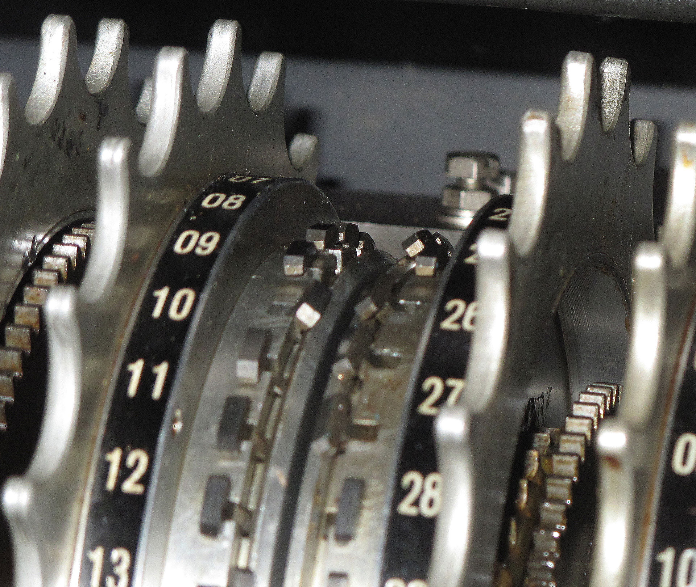

 During World War II, Colossus was the name of a series of computers developed by British code breakers, In 1943-1945 to help in the cryptanalysis of the Lorenz cipher. Colossus used thermionic valves (vacuum tubes) and they ratrons to perform Boolean and counting operations. Colossus is thus regarded as the world's first programmable, electronic,digital computer, although it was programmed by plugs and switches and not by a stored program.
In conclusion,they also create two types of machine that are a form of prototype. One was called Colossus mark 1 it was successful machine. But problem that arose in 1944, was that the codes became more difficult to crack.finally, William Chandler created colossus mark 2 that increased Britain to win the war!
The Colossus computer deduced messages with twelve wheels that could decipher keys to solve German teleprinting Thanks Bill Tutte , he also use differencing and knowing the psi wheels gears, produce a statistic non-random called Tutte’s”1+2 break in”. examples calculator key ∆Z1 ⊕ ∆Z2 ⊕ ∆{\displaystyle \chi }^1 ⊕ ∆{\displaystyle \chi }^2 = •
In 1943, june [He main components of Colossus's predecessor, Heath Robinson were as follows.A tape transport and reading mechanism that ran the looped key and message tapes at between 1000 and 2000 characters per second.(Wikipedia)
By 1947, Forrester and collaborator Robert Everett completed the design of a high-speed stored-program computer for this task. Most computers of the era operated in bit-serial mode, using single-bit arithmetic and feeding in large words, often 48 or 60 bits in size, one bit at a time. This was simply not fast enough for their purposes, so they Ignoring memory speed, Whirlwind "20,000 single-address operations per second" in 1951.The design used approximately 5,000 vacuum tubes ,they had spent 1 million dollars, Thanks Tommy flower destroying the data of blueprints files it was a mistake cause the machine not be destroyed after the war had ended, In 1972, Herman Gold stine wrote that Britain had such vitality that it could immediately after the war embark on so many well-conceived and well-executed projects in the computer field.Data gotten(Wikipedia).
In summary, during WWII computers allowed the Allies to read German messages. Britain used this information in planning their attacks. This technology was retained in case of another war or sneak attack!